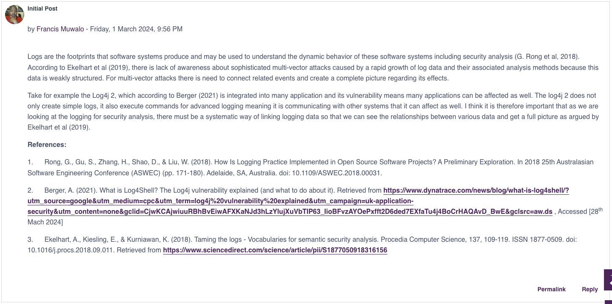

Unit 5: Artefacts
Collaborative discussion
Part of this unit was reply to the forum posts of two of our peers:
Peer Post 1
Peer Post 2
Case Study: Reviewing an Assessment Reporting Template
Answer the following questions:
- Does this template meet the NCSC stated requirement of preparing a baseline to use as a reference point for pen tests? If not, what changes/amendments would you make?
- What are the two best lessons/examples presented in the report?
- Gather and synthesise information from multiple sources (including internet security alerts and warning sites) to aid in the systematic analysis of security breaches and issues.
Answers
- The Sample Report seems to partially meet NCSC requirements for establishing a baseline.
- It could benefit from incorporating a broader range of vulnerabilities, detailed threat modeling
- It could benefit from further analysing internal and external threats
- It demonstrates the importance of regular patching and having a systematic approach to vulnerability remediation
- It demonstrates the importance of prioritising risks based on their severity
The report may benefit from summarising vulnerabilities or categorising them into groups, and proposing mitigations and recommendations for similar vulnerabilities. For instance, in my own report for the Unit 6 assignment, I found that a lot of the vulnerabilities discovered shared similarities, and could be mitigated by employing various techniques and systems. Forming a report in this manner may keep it more concise, but with the same effect and outcome for the business it was prepared for.
In my own report, I ensured to include references to online databases such as the NVD from NIST, allowing the business to refer to detailed information about the vulnerability and how to patch it. Although detail is important, a business customer may not understand or be interested in the details, but rather in the overal strategy and recommendations. Keeping the detail in the references or in an appendix helps with the overall flow of the document.